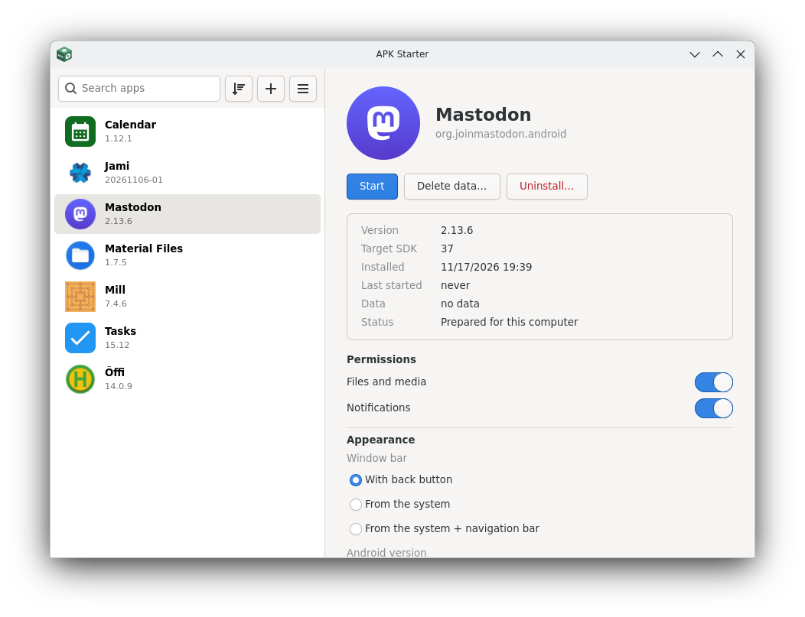
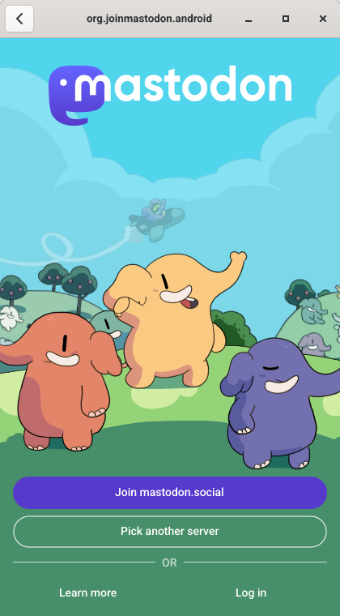
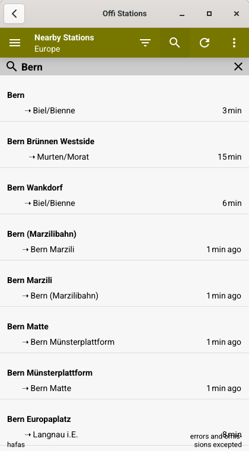
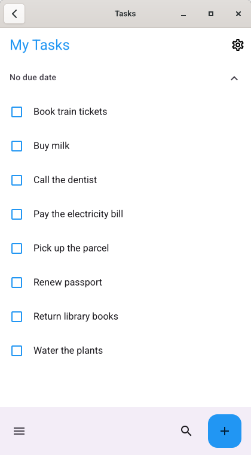
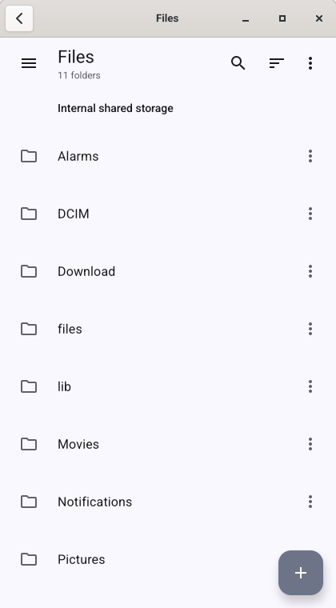
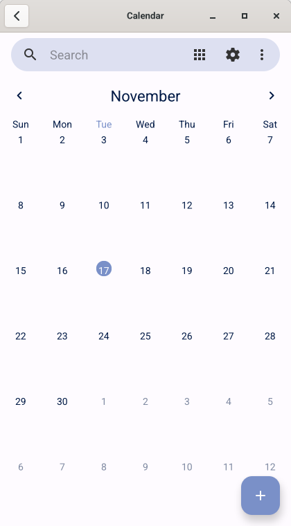
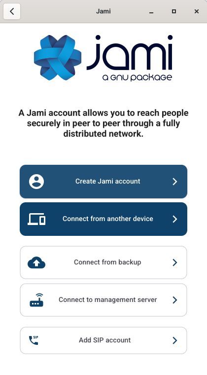
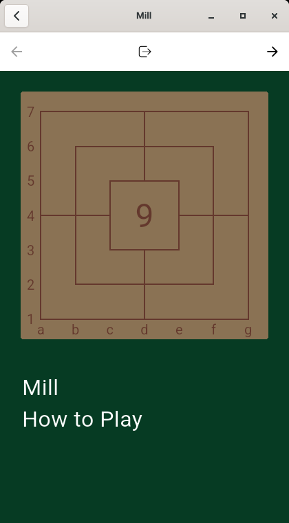

APK Starter
Run Android apps on Linux as native windows – no emulator, no container.
Open an APK file and the app runs in its own window on your Linux desktop, with an entry in the application menu and its own data folder. APK Starter packages Android Translation Layer (ATL) as a Flatpak, reads name and icon from the APK and takes care of installing, starting and removing apps.
Version 0.9.3 (20 November 2026) · free software, GPL-3.0-or-later · own Flatpak repository, not on Flathub · source code on GitHub

What it does
- Open an APK: it is installed and starts as a normal window; every installed app gets its own menu entry.
- No Android system runs in the background: ATL implements Android's app interfaces on Linux, the app code runs in ART (Android's runtime), the window is a GTK window.
- Sound, video and OpenGL go straight to the host's display, sound system and GPU.
- Get apps with Aurora Store, and use Google sign-in for apps with microG (both are downloaded from their official sources when you ask for them; they are not part of APK Starter).
Screenshots
Taken with the published 0.9.2 Flatpak, English locale, window 420×760. No accounts or personal data; all apps shown are free software.







Questions and answers
How is this different from Waydroid or Anbox?
Waydroid and Anbox start a complete Android system in a container and show its apps from there. APK Starter does not run an Android system: Android Translation Layer implements Android's app interfaces directly on Linux, so every app is a normal Linux process with its own window, menu entry and data folder. There is no Android image to download and no container or virtual machine to start. The other side of this: apps that need parts of Android that ATL does not implement yet do not work.
Is it an emulator?
No. Nothing is emulated: the apps' code runs directly on your x86_64 processor, and their native libraries are loaded as Linux libraries.
Which apps run?
For every release we run a test with 151 free apps (list below). With 0.9.3, 150 of them started and went through a short scripted test – start, scroll, open the menu, go back – without crashing; one (Amaze) crashed. WhatsApp runs as a linked companion device (QR code): in hands-on tests the chats, sending messages, animated GIFs, opening links in the browser, playing voice messages and profile pictures worked. A run without a crash does not mean that every function of an app works.
How do I install it?
As a Flatpak from the project's own signed repository – see Install.
Where do the apps come from?
You bring the APK files yourself, or install apps with Aurora Store from inside APK Starter. APK Starter ships no apps.
Does it include Google Play Services?
No. Apps that need Google Play Services can use microG, which APK Starter downloads from its official source when you ask for it.
What does not work?
See Limits: in short, only x86_64 APKs, no camera, Bluetooth or telephony, and not every app or game runs.
How was it made?
APK Starter is vibe coded: the starter and its fixes in ATL, ART and bionic_translation were written by an AI coding assistant (Claude by Anthropic) under the direction of the maintainer, and checked with test runs on real apps (see Tested apps).
Limits
- x86_64 APKs only. Apps whose native code exists only for ARM are refused with a message.
- Camera, Bluetooth and telephony are not supported.
- No Google Play Services; apps that need them need microG.
- Not every app runs: in the 0.9.3 test the file manager Amaze crashed; in our 0.9.1 tests the game Mindustry crashed when it ran without a sound device, and the Gmail app did not get through the test.
Install
Flatpak
flatpak install --user https://jimbambuli.github.io/apk-starter/io.github.Jimbambuli.ApkStarter.flatpakrefOr add the repository first:
apk-starter.flatpakrepo,
then flatpak install apk-starter io.github.Jimbambuli.ApkStarter.
The repository is signed; the public key is apk-starter.gpg. The runtime (GNOME) comes
from Flathub.
flatpak run --file-forwarding io.github.Jimbambuli.ApkStarter @@ app.apk @@Details, options and the shell alias are in the README.
Tested apps (0.9.3)
151 free apps, each started with a build from the same sources as the 0.9.3 release in a 420×807 window with English locale and taken through the same short script: start, scroll, open the menu, go back (about one minute per app). «No crash» means: the app started, the steps ran, and there was no fatal exception and no fatal signal. It does not mean that every function of the app works. Notes only where the test showed something.
Show all 151 apps (150 without crash, 1 crash)
| App | Version | Package | Result | Note |
|---|---|---|---|---|
| 2048 | 1.4.2 | org.secuso.privacyfriendly2048 | no crash | |
| Aard 2 | 0.61 | itkach.aard2 | no crash | |
| Aegis | 3.4.3 | com.beemdevelopment.aegis | no crash | |
| Aisleron | 2026.6.3 | com.aisleron | no crash | |
| Alibi | 0.5.3 | app.myzel394.alibi | no crash | |
| Amaze | 3.11.4 | com.amaze.filemanager | crash | crashed with a fatal signal (also in 0.9.1 and 0.9.2) |
| Andor's Trail | 0.8.18 | com.gpl.rpg.AndorsTrail | no crash | |
| AnkiDroid | 2.25.3 | com.ichi2.anki | no crash | |
| AntennaPod | 3.12.3 | de.danoeh.antennapod | no crash | |
| Antimine | 17.6.3 F | dev.lucanlm.antimine | no crash | |
| AnyMemo | 10.12.2 | org.liberty.android.fantastischmemo | no crash | |
| App Manager | 4.1.1 | io.github.muntashirakon.AppManager | no crash | |
| Aurora Store | 4.8.4 | com.aurora.store | no crash | |
| Auxio | 4.1.5 | org.oxycblt.auxio | no crash | |
| Aves Libre | 1.15.9 | deckers.thibault.aves.libre | no crash | |
| Barcode Scanner | 1.26.3 | com.atharok.barcodescanner | no crash | |
| Beat Feet | 0.16.2 | com.serwylo.beatgame | no crash | |
| BeatBridge | 1.0.85 | com.beatbridge | no crash | |
| Binary Eye | 1.75.7 | de.markusfisch.android.binaryeye | no crash | |
| BlitzMail | 0.7.1 | de.grobox.blitzmail | no crash | |
| Block Drop | 1.0.70 | com.blockdrop.game | no crash | |
| Booming Music | 1.4.2 | com.mardous.booming | no crash | |
| Braincup | 3.8.1 | com.inspiredandroid.braincup | no crash | |
| Breezy Weather | 6.2.2_freenet | org.breezyweather | no crash | |
| Briar | 1.5.23 | org.briarproject.briar.android | no crash | |
| Buran | v1.12 | corewala.gemini.buran | no crash | |
| Calculator | 1.4.0 | org.fossify.math | no crash | |
| Calculator | 3.1.2 | com.marktka.calculatorYou | no crash | |
| Calendar | 1.12.1 | org.fossify.calendar | no crash | |
| Calendar Color | 0.5 | ch.ihdg.calendarcolor | no crash | |
| Capy Reader | 2026.11.1217 | com.capyreader.app | no crash | |
| Catima | 2.45.2 | me.hackerchick.catima | no crash | |
| Clock | 1.6.0 | org.fossify.clock | no crash | |
| Coffee | 2.27 | com.github.muellerma.coffee | no crash | |
| CoMaps | 2026.10.05-19-FDroid | app.comaps.fdroid | no crash | |
| Compass | 2.2.0 | com.bobek.compass | no crash | |
| ConnectBot | 1.11.1-oss | org.connectbot | no crash | |
| Contacts | 1.6.0 | org.fossify.contacts | no crash | |
| Conversations | 2.21.0+free | eu.siacs.conversations | no crash | |
| Daily You | 3.10.0 | com.demizo.daily_you | no crash | |
| DAVx⁵ | 4.5.21-ose | at.bitfire.davdroid | no crash | |
| DroidFish | 1.90 | org.petero.droidfish | no crash | |
| Editor | 1.98 | org.billthefarmer.editor | no crash | |
| Element Classic | 1.6.62 | im.vector.app | no crash | closes after Back, as on Android |
| Etar | 1.0.57 | ws.xsoh.etar | no crash | |
| F-Droid | 2.0.2 | org.fdroid.fdroid | no crash | |
| FairEmail | 1.2339 | eu.faircode.email | no crash | |
| Fedilab | 3.45.1 | fr.gouv.etalab.mastodon | no crash | |
| Feeder | 2.25.0 | com.nononsenseapps.feeder | no crash | |
| Feedora | 1.0.0 | com.mohamedaminelouati.feedora | no crash | |
| File Manager | 1.6.3 | org.fossify.filemanager | no crash | |
| Flang | 1.23 | de.tadris.flang | no crash | |
| Forecastie | 1.23 | cz.martykan.forecastie | no crash | |
| FOSS Browser | 24 | de.baumann.browser | no crash | |
| FreeOTP+ | 3.4 | org.liberty.android.freeotpplus | no crash | |
| FTPS Server | 2026.11.03 | com.siarheikuchuk.ftpsserver | no crash | |
| Gallery | 1.14.1 | org.fossify.gallery | no crash | |
| Ghost Commander | 1.64.2b4 | com.ghostsq.commander | no crash | |
| GPSLogger | 138 | com.mendhak.gpslogger | no crash | |
| Guessaday | 2.3.0 | com.goltzkiste.guessaday | no crash | |
| Habits | 2.3.2 | org.isoron.uhabits | no crash | |
| Handy Reading | 1.1.6 | ru.yanus171.feedexfork | no crash | |
| IPCam Demo | 2.4.1 | com.github.niqdev.ipcam | no crash | |
| Jami | 20261106-01 | cx.ring | no crash | closes after Back, as on Android |
| Jellyfin | 2.7.3 | org.jellyfin.mobile | no crash | |
| JustChess | 2.5 | com.alaskalinuxuser.justchess | no crash | |
| K-9 Mail | 24.0 | com.fsck.k9 | no crash | |
| KDE Connect | 1.37.2 | org.kde.kdeconnect_tp | no crash | |
| KeePassDX | 4.5.6 | com.kunzisoft.keepass.libre | no crash | |
| Lato | 1.1.6 | ardash.lato | no crash | |
| Leafpad | 1.24 | com.git.amarradi.leafpad | no crash | |
| LensCast | 0.2.0 | com.raulshma.lenscast | no crash | |
| Lexica | 3.13.1 | com.serwylo.lexica | no crash | |
| Libre Camera | 2.0.2 | com.iakmds.librecamera | no crash | |
| Librera FD | 10.0.26-fdroid | com.foobnix.pro.pdf.reader | no crash | |
| Librery | 3.0 | com.example.harisont.librery | no crash | |
| LibreTorrent | 4.1.1 | org.proninyaroslav.libretorrent | no crash | |
| LibreTube | 32.1 | com.github.libretube | no crash | |
| Lightning | 5.0.2 | acr.browser.lightning | no crash | |
| Markor | 2026.10.0 | net.gsantner.markor | no crash | |
| Mastodon | 2.13.6 | org.joinmastodon.android | no crash | |
| Material Files | 1.7.5 | me.zhanghai.android.files | no crash | |
| Memo Game | 1.1.3-google | org.secuso.privacyfriendlymemory | no crash | |
| Mill | 7.4.6 | com.calcitem.sanmill | no crash | |
| Minesweeper | 1.2.3 | org.secuso.privacyfriendlyminesweeper | no crash | |
| Mirror | 1.2.0 | com.polar.mirror | no crash | |
| MJ PDF | 3.1.0 | com.gitlab.mudlej.MjPdfReader | no crash | |
| Money Manager Ex | 5.5.15-release | com.money.manager.ex | no crash | |
| mpv | 2026-09-17-release | is.xyz.mpv | no crash | |
| Music Player | 1.8.5 | org.fossify.musicplayer | no crash | |
| My Expenses | 4.1.3.1 | org.totschnig.myexpenses | no crash | |
| N-Zik-Foss | 8.6.0-r64 | com.nevar.nzik.foss | no crash | |
| Neo Backup | 8.3.18 | com.machiav3lli.backup | no crash | |
| NewPipe | 0.29.1 | org.schabi.newpipe | no crash | |
| Nextcloud | 35.0.2 | com.nextcloud.client | no crash | |
| Nextcloud Notes | 35.0.0 | it.niedermann.owncloud.notes | no crash | |
| Nextcloud Passwords | 1.2.1 | com.hegocre.nextcloudpasswords | no crash | |
| Noice | 2.5.7 | com.github.ashutoshgngwr.noice | no crash | |
| NoNonsense Notes | 7.2.7 | com.nononsenseapps.notepad | no crash | |
| Notally | 6.2 | com.omgodse.notally | no crash | |
| Notes | 1.7.0 | org.fossify.notes | no crash | |
| Odyssey | 1.4.0 | org.gateshipone.odyssey | no crash | |
| Omni Notes FOSS | 6.5.1 | it.feio.android.omninotes.foss | no crash | |
| Open Camera | 1.56.2 | net.sourceforge.opencamera | no crash | |
| openHAB | 3.21.1 | org.openhab.habdroid | no crash | |
| OpenKeychain | 6.0.4 | org.sufficientlysecure.keychain | no crash | |
| OpenMultiMaps | 1.3.0 | app.fedilab.openmaps | no crash | |
| openScale | 3.1.4 | com.health.openscale | no crash | |
| OpenTracks | v4.29.0irreproducible | de.dennisguse.opentracks | no crash | |
| Organic Maps | 2026.09.29-32-FDroid | app.organicmaps | no crash | |
| Orgzly Revived | 1.23.0 | com.orgzlyrevived | no crash | |
| Padland | 4.0 | com.mikifus.padland | no crash | |
| PairDrop | 2.3.1 | com.fmsys.snapdrop | no crash | |
| PassAndroid | 3.7.3 | org.ligi.passandroid | no crash | |
| Periodical | 1.97 | de.arnowelzel.android.periodical | no crash | |
| Pixelix | 5.2.2 | com.daniebeler.pfpixelix | no crash | |
| Podcini.X | 11.2.2.8 | ac.mdiq.podcini.X | no crash | |
| Privacy Browser | 3.20.1 | com.stoutner.privacybrowser.standard | no crash | closes itself after Back (whether Android does the same was not checked) |
| QuickDic | 5.8.7 | de.reimardoeffinger.quickdic | no crash | |
| RadioDroid | 0.86 | net.programmierecke.radiodroid2 | no crash | |
| Read You | 0.16.2 | me.ash.reader | no crash | |
| Screenshot Tile | 2.21.4 | com.github.cvzi.screenshottile | no crash | |
| Seafile | 4.0.15 | com.seafile.seadroid2 | no crash | |
| Shattered Pixel Dungeon | 4.0.2 | com.shatteredpixel.shatteredpixeldungeon | no crash | |
| Simple Solitaire Collection | 3.13 | de.tobiasbielefeld.solitaire | no crash | |
| SleepGuard | 1.7.0 | com.sleepguard | no crash | |
| StreetComplete | 64.0 | de.westnordost.streetcomplete | no crash | |
| Sudoku | 3.2.6 | org.secuso.privacyfriendlysudoku | no crash | |
| Suntimes | 0.17.6 | com.forrestguice.suntimeswidget | no crash | |
| Syncthing-Fork | 2.1.7.0 | com.github.catfriend1.syncthingfork | no crash | |
| Tasks | 15.12 | org.tasks | no crash | |
| Tempus Romanum | 2.6.1 | com.dev.xavier.tempusromanum | no crash | |
| Threema Libre | 6.5.3l | ch.threema.app.libre | no crash | |
| To-Do List | 3.4.0 | org.secuso.privacyfriendlytodolist | no crash | |
| Track & Graph | 10.5.1 | com.samco.trackandgraph | no crash | |
| Trail Sense | 8.2.0 | com.kylecorry.trail_sense | no crash | |
| Transistor | 4.3.10 | org.y20k.transistor | no crash | |
| Transportr | 2.2.7 | de.grobox.liberario | no crash | |
| Tusky | 33.1 | com.keylesspalace.tusky | no crash | |
| Ultrasonic | 4.9.0 | org.moire.ultrasonic | no crash | |
| Vector Pinball | 1.16.0 | com.dozingcatsoftware.bouncy | no crash | |
| Vinyl Music Player | 1.11.0 | com.poupa.vinylmusicplayer | no crash | |
| VLC | 3.7.2 | org.videolan.vlc | no crash | |
| Voice Recorder | 1.7.4 | org.fossify.voicerecorder | no crash | |
| Waterfly III | 1.3.0 | com.dreautall.waterflyiii | no crash | |
| WeeWX App | 2.2.19 | com.odiousapps.weewxweather | no crash | crashed once in the first run; two repeated runs without crash |
| WiFiAnalyzer | 3.3.1 | com.vrem.wifianalyzer | no crash | |
| Wikipedia | r/50616-r-2026-11-03 | org.wikipedia | no crash | |
| World Weather | 1.2.6 | com.haringeymobile.ukweather | no crash | |
| Z2M Dash | 0.0.136 | com.odiousapps.z2mdash | no crash | |
| Öffi | 14.0.9 | de.schildbach.oeffi | no crash |
Based on Android Translation Layer
APK Starter would not exist without Android Translation Layer, «a translation layer that allows running Android apps on a Linux system», developed by Mis012, Julian Winkler and other contributors (GPL-3.0). Thank you! APK Starter builds on ATL and its parts (ART, bionic_translation and others) and uses our own forks of them under github.com/Jimbambuli; the changes there are free software like ATL. Not affiliated with Google; Android is a trademark of Google LLC.
Source: github.com/Jimbambuli/apk-starter, GPL-3.0-or-later.